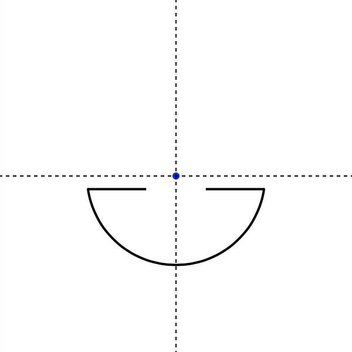

Bio-inspired Intelligence
Raphaël Diana & Antoine Gaget
The goal of this project is to use a genetic algorithm to see if the results show in
Nilsson and Pelger, 1994 can be obtain without "guiding" the evolution.
Click here or on the image below to view our results
